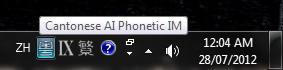
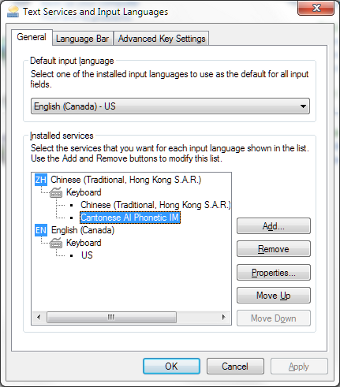

Here’s the Windows 7 version of my Cantonese Artificially-intelligent Phonetic (CAP) input method! This article describes how to download and install it.
Determine whether your PC is running a 32-bit or 64-bit version of Windows 7. If you don’t know how, this Microsoft support webpage shows you what to do.
Download and install the Microsoft Visual C++ 2010 SP1 Redistributable Package (x86). See the “Instructions” section on that page for installation instructions.
Download and install the Microsoft Visual C++ 2010 SP1 Redistributable Package (x64). See the “Instructions” section on that page for installation instructions.
Download the file cap-x64.msi file from my SkyDrive. Double-click on it to start the Windows Installer. Accept the license agreement and click “Install”. If Windows Installer asks:
Do you want to allow the following program from an unknown publisher to make changes to this computer?
Click “yes” to allow Windows Installer to proceed with the installation.
CAP should now be installed and ready for use. See the notes in the section CAP Usage Notes for information on how to use it.
Download and install the Microsoft Visual C++ 2010 SP1 Redistributable Package (x86). See the “Instructions” section on that page for installation instructions.
Download the file cap-Win32.msi from my SkyDrive. Double-click on it to start the Windows Installer. Accept the license agreement and click “Install”. If Windows Installer asks:
Do you want to allow the following program from an unknown publisher to make changes to this computer?
Click “yes” to allow Windows Installer to proceed with the installation.
CAP should now be installed and ready for use. See the notes in the next section for information on how to use it.
The keyboard shortcut to switch input methods on Windows 7 is Shift-Alt. The CAP icon appears in the Windows “system tray” when CAP is active.

CAP can be added to and removed from the list of selectable input methods in the “Text Services and Input Languages” panel. The latter can be accessed by choosing “Control Panel”, then “Clock, Language, and Region”. In the “Region and Language” panel, choose the “Keyboards and Languages” tab and click “Change keyboards…”.

For general information on the use of input methods (called input method editors or IMEs in Windows documentation) on Windows 7, see this Microsoft page, this other Microsoft page, or this Pinyin Joe page, for example.
See the article CAP — a Cantonese Artificially-intelligent Phonetic Input Method on how to use CAP. The examples there show screenshots taken from the use of the Linux version of CAP, but the Windows version should work very much the same way.
Tables on the Chinese Wikipedia page on Sidney Lau romanization should prove very helpful if you’re unfamiliar with that romanization.
For detail CAP licensing information, read the file C:\ProgramData\SixthHappiness\CAP\1.0\License.txt after installation. To summarize:
You can only use it for personal and non-commercial purposes.
You may not redistribute it.
I’m not liable for any damages it may cause (although I don’t intend nor expect it to cause any).
Have fun!
Category: Programming